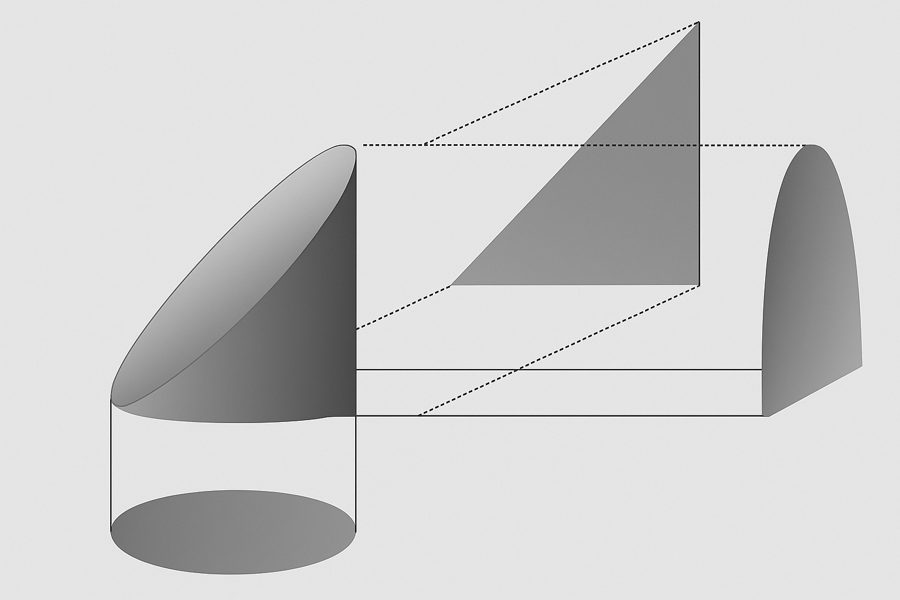

| name | site | age | sofa | lactate | map_min | baseline_creat | protocol_adherence | crp | albumin |
|---|---|---|---|---|---|---|---|---|---|
| Aoife Byrne | ICU_B | 71 | 6 | 2.1 | 66 | 1.0 | 0.72 | 95 | 2.7 |
| Tomás Ruiz | ICU_A | 54 | 3 | 1.2 | 78 | 0.9 | 0.85 | 45 | 3.4 |
| Priya Nair | ICU_D | 38 | 12 | 4.1 | 54 | 1.5 | 0.55 | 190 | 2.2 |
1 Datos, modelos y decisiones
Abajo tienes cinco cosas que Emma y Seán tienen delante esta noche. Clasifica cada una como datos (un hecho registrado), modelo (una representación de cómo se relacionan las cosas), información (lo que un modelo nos dice sobre este caso) o decisión (una elección entre acciones). Arriésgate con tu mejor respuesta: el capítulo explica cada término.
| Elemento | Tu etiqueta |
|---|---|
| "El lactato de Aoife es 2,1 mmol/L." | |
| Las historias clínicas de 1250 pacientes anteriores de UCI, de cuatro hospitales. | |
| "El aumento de la creatinina depende de la gravedad de la enfermedad, de la presión arterial y de la función renal basal, además de cierta variación no explicada." | |
| "Se espera que la creatinina de Aoife aumente unos 0,3 mg/dL en las próximas 48 horas." | |
| Iniciar el paquete de protección renal esta noche o volver a evaluar por la mañana. |
Cómo usar este capítulo
¿Empiezas aquí?
Este es el primer capítulo, así que no da nada por supuesto. Si llegaste al libro por un tema posterior, vale la pena leer de todos modos dos partes de este capítulo, porque todos los demás se apoyan en ellas: los cuatro ejemplos recurrentes (Sección 1.1) y la base de decisión con su umbral (Sección 1.5). Cada capítulo posterior las repasa brevemente en su propio recuadro ¿Empiezas aquí?.
Este capítulo construye el vocabulario de todo el libro: datos, modelos, decisiones y lo que entendemos por inteligencia artificial y aprendizaje automático. Tiene doce secciones y un Laboratorio, ocho comprobaciones rápidas, tres widgets “Pruébalo”, un desafío y tres misiones de programación en R y Python. Reserva unos 90 minutos. Todavía no necesitas saber programar: las misiones te dicen exactamente qué escribir.
La notación de un vistazo (solo para consulta)
| Símbolo | Significado | Sección |
|---|---|---|
| \(n\), \(p\) | número de instancias (filas), número de características (columnas) | Sección 1.7 |
| \(\mathbf{x}_i\), \(y_i\) | características y desenlace de la instancia \(i\) | Sección 1.7 |
| \(f\) | la relación verdadera, desconocida, entre las características y el desenlace | Sección 1.4 |
| \(\varepsilon\) | error: la parte del desenlace que las características no explican | Sección 1.4 |
| \(\hat f\), \(\hat y\) | un modelo ajustado y su predicción (“sombrero” = estimado) | Sección 1.4 |
| \(\mathcal{A}\) | el conjunto de alternativas de una decisión | Sección 1.5 |
| \(\mathcal{K}\) | el estado de conocimiento de quien decide | Sección 1.5 |
| \(p_{\text{LRA}}\) | probabilidad de que un paciente desarrolle una lesión renal aguda | Sección 1.5 |
La lista completa está en la página de notación.
1.1 Cuatro ejemplos recurrentes
A lo largo del libro volvemos siempre a las mismas cuatro situaciones. Proceden de rincones distintos de la atención sanitaria, para que veas la misma idea funcionando en lugares diferentes, y crecen con el libro: la tabla que conoces hoy se convierte en un problema de predicción, después en un riesgo con incertidumbre, luego en un conjunto de datos con huecos, una nube de puntos en muchas dimensiones, grupos de pacientes, un modelo explicado, una pregunta causal, un flujo de texto clínico y, por último, una decisión apoyada por un modelo de lenguaje. Los cuatro conjuntos de datos son simulados (no describen a ninguna persona real) y pueden descargarse, junto con el código que los generó, desde el apéndice de datos.
| Ejemplo 1 UCI Sala 7 | Ejemplo 2 Ensayo ONCO-1 | Ejemplo 3 HomeBeat | Ejemplo 4 CellWorks | |
|---|---|---|---|---|
| Ámbito | Medicina hospitalaria, farmacia | Oncología, terapias avanzadas | Dispositivos ponibles, ensayos digitales | Fabricación de terapias celulares y génicas |
| Unidades | 1250 pacientes de UCI, 4 hospitales | 1000 pacientes aleatorizados (de 10 000) | 500 participantes a distancia | 420 lotes de producción |
| Qué se mide | escala de gravedad, lactato, presión arterial, marcadores renales e inflamatorios | tratamiento, dosis, grado tumoral, 50 genes (de 2000) | frecuencia cardíaca, variabilidad de la frecuencia cardíaca, temperatura de la piel, actividad | días de cultivo, desviaciones de temperatura y pH, viabilidad, transducción |
| Desenlace | cambio de la creatinina en 48 h | reducción del tumor (%) | puntuación de estrés, evento de deterioro | puntuación de potencia |
| Pregunta típica | ¿Quién está en riesgo de lesión renal aguda y qué debe hacer el equipo esta noche? | ¿Funciona la quimioterapia, para quién, y qué genes importan? | ¿Puede un reloj inteligente detectar el deterioro a tiempo? | ¿Qué factores del proceso determinan la potencia? ¿Por qué falló un lote? |
| Personas que conocerás | Aoife, Tomás y Priya; la Dra. Emma Walsh; Seán, el farmacéutico | pacientes #0042 y #0917 | Lena, cuyo reloj deja de enviar datos | lote CW-118, que no superó su prueba de liberación |
Ejemplo 1: UCI Sala 7 es nuestro ejemplo principal. La lesión renal aguda (LRA) es una pérdida súbita de la función renal, frecuente en pacientes críticos; un aumento de la creatinina sérica de al menos 0,3 mg/dL en 48 horas es uno de los criterios aceptados internacionalmente para definirla (Kidney Disease: Improving Global Outcomes (KDIGO) Acute Kidney Injury Work Group 2012). El conjunto de datos registra, para 1250 pacientes anteriores, lo que se sabía al ingreso (edad, la escala SOFA de fallo orgánico (Vincent et al. 1996), lactato, la presión arterial más baja, marcadores renales e inflamatorios, el grado de cumplimiento del protocolo asistencial) y lo que ocurrió con su creatinina en las 48 horas siguientes. Esta noche hay tres pacientes nuevos en la unidad, y nadie sabe todavía qué les va a pasar:
Ejemplo 2: ONCO-1 es un ensayo aleatorizado en el que pacientes con tumores sólidos fueron asignados, por sorteo, a quimioterapia o a ninguna quimioterapia. Se midió el tamaño del tumor antes y después del tratamiento, y se registró la expresión de 2000 genes. Ejemplo 3: HomeBeat sigue a 500 personas en su casa que llevan un reloj inteligente como parte de un ensayo descentralizado (realizado en gran parte fuera del entorno clínico). Ejemplo 4: CellWorks registra 420 lotes de producción de una terapia celular; cada lote debe superar una prueba de potencia antes de poder administrarse a un paciente.
Las imágenes también son datos. Cuando lleguemos a las redes neuronales (Capítulo 7), una quinta fuente se sumará a los cuatro ejemplos: radiografías de tórax pediátricas etiquetadas como normal o neumonía, tomadas de la colección pública PneumoniaMNIST (Yang et al. 2023; Kermany et al. 2018). Se describen en el apéndice de datos.
¿En qué ejemplo recurrente la asignación de la exposición principal la decidieron los investigadores, y no las circunstancias?
1.2 Vivir en la era de los datos
Definición 1.1 (Datos) Los datos son representaciones registradas de hechos, observaciones o mediciones sobre objetos, eventos o fenómenos: números de un sensor, anotaciones en una historia clínica, píxeles de una imagen, palabras de un informe de alta, la secuencia de bases de una hebra de ADN. Por sí solos son símbolos; se convierten en información cuando se interpretan en un contexto.
Vivimos en una era de abundancia de datos. En las últimas décadas, el coste de la computación y del almacenamiento ha bajado, mientras que la capacidad de recoger, transmitir y analizar información ha crecido en órdenes de magnitud (Hilbert y López 2011). Las ciencias de la vida son un caso llamativo: la genómica, la transcriptómica, la proteómica y la metabolómica producen descripciones masivas y de alta resolución de los sistemas biológicos (Stephens et al. 2015; Hasin, Seldin, y Lusis 2017). En la atención sanitaria, las historias clínicas electrónicas, los resultados de laboratorio, las imágenes médicas, los sensores ponibles y los perfiles ómicos ofrecen en conjunto una visión multidimensional de cada paciente (Jensen, Jensen, y Brunak 2012; Hripcsak y Albers 2013).
El desafío ya no es solo recoger datos, sino integrar fuentes heterogéneas en una evidencia coherente y fiable para la predicción, el tratamiento personalizado y el apoyo a la decisión clínica (Raghupathi y Raghupathi 2014; Karczewski y Snyder 2018), manteniendo una atención segura, justa y transparente (Topol 2019). En la UCI Sala 7, por ejemplo, la historia de Aoife ya reúne una escala de gravedad, la lectura de un gasómetro, un monitor de presión arterial y resultados de laboratorio, cada uno producido por un sistema distinto.
1.3 De dónde vienen los datos: observación y experimento
Los métodos de IA y de aprendizaje automático dependen de la calidad y la naturaleza de los datos con que se entrenan. La mayoría de los datos sanitarios proceden de uno de dos tipos de proceso.
Definición 1.2 (Datos observacionales y experimentales) Los datos observacionales se registran a medida que suceden las cosas, sin que el investigador intervenga: historias clínicas, registros de enfermedades, flujos de dispositivos ponibles, archivos de imágenes, registros de fabricación. Los datos experimentales se generan cuando el investigador asigna tratamientos, condiciones o exposiciones según un diseño, desde experimentos in vitro y estudios en animales hasta ensayos controlados aleatorizados.
Los datos observacionales ofrecen amplitud y realismo: muestran cómo funcionan los tratamientos en la práctica habitual, en toda la variedad de pacientes y durante periodos largos, y por eso son esenciales para vigilar la seguridad de las nuevas terapias tras su aprobación (Sherman et al. 2016). Los datos experimentales ofrecen rigor: como el investigador controla quién recibe qué (idealmente mediante aleatorización), son la base más sólida para afirmar que un tratamiento causa un efecto (Hernán y Robins 2020), y constituyen la columna vertebral de las evaluaciones regulatorias de las nuevas terapias avanzadas.
Los dos tipos son complementarios. Un modelo de riesgo puede desarrollarse con datos observacionales y probarse después en un ensayo; un ensayo puede sugerir qué pacientes se benefician, y los datos observacionales muestran luego si eso se mantiene en la práctica. En nuestros ejemplos, UCI Sala 7, HomeBeat y CellWorks son observacionales; ONCO-1 es experimental. Ten presente esta distinción: en la Sección 1.10 veremos que determina qué preguntas puede responder un modelo.
Una farmacéutica de hospital extrae de las historias clínicas a todos los pacientes que recibieron vancomicina el año pasado, con su función renal antes y después. ¿Qué tipo de datos son?
1.4 Modelos: representaciones de la realidad
Observa la Figura 1.1. A la izquierda hay un cilindro cortado en diagonal. Visto desde distintos puntos de vista, aparece como una elipse (desde abajo), un triángulo (de lado) o un arco redondeado (de frente). Cada una de estas formas planas representa el mismo objeto sólido, cada una conserva algunas de sus características y pierde otras, y cada una se apoya en supuestos: por ejemplo, que un objeto tridimensional puede resumirse mediante una sombra bidimensional. Otra palabra para representación es modelo.

Definición 1.3 (Modelo) Un modelo es una representación simplificada de una parte de la realidad, construida con un propósito y apoyada en supuestos. Varios modelos pueden representar la misma realidad; pueden compararse según lo bien que sirven a ese propósito.
Los modelos pueden ser dibujos, diagramas de flujo o réplicas físicas. En este libro son sobre todo matemáticos. Empieza por el conjunto de datos más pequeño que se pueda imaginar (Tabla 1.3): cinco personas de las que registramos si tienen una enfermedad cardíaca, su nivel de actividad y su edad, junto con su frecuencia cardíaca y su saturación de oxígeno en sangre (SpO2). Esta tabla es evidencia factual sobre un pequeño trozo de la realidad, el equivalente del cilindro cortado de la Figura 1.1.
| Persona | Condición | Actividad | Edad | FC (lpm) | SpO2 (%) |
|---|---|---|---|---|---|
| P01 | Healthy | Rest | 52.4 | 73 | 98.9 |
| P02 | HeartCondition | Moderate | 73.1 | 88 | 93.4 |
| P03 | HeartCondition | Rest | 61.2 | 73 | 95.8 |
| P04 | HeartCondition | Moderate | 36.0 | 90 | 94.0 |
| P05 | Healthy | Rest | 53.7 | 72 | 98.0 |
A partir de esta única realidad podríamos construir muchas representaciones, según nuestro objetivo. Supón que queremos explicar la frecuencia cardíaca y la SpO2 usando el resto de la información. Podemos escribir
\[ (\text{frecuencia cardíaca},\ \text{SpO}_2) = f(\text{condición},\ \text{actividad},\ \text{edad}) , \qquad(1.1)\]
que dice que los dos desenlaces son alguna función \(f\) de la condición, la actividad y la edad. Tal como está, la Ecuación 1.1 es una función matemática: supone que no hay error. Pero dos personas con la misma condición, la misma actividad y la misma edad rara vez tienen exactamente la misma frecuencia cardíaca: la biología, los factores no medidos y el error de medición influyen todos. Añadir un término de error la convierte en un modelo estadístico,
\[ (\text{frecuencia cardíaca},\ \text{SpO}_2) = f(\text{condición},\ \text{actividad},\ \text{edad}) + \text{error} , \qquad(1.2)\]
que en la notación general del libro se escribe
\[ y = f(\mathbf{x}) + \varepsilon , \qquad(1.3)\]
donde \(y\) es el desenlace, \(\mathbf{x}\) reúne las características usadas para explicarlo, \(f\) es la parte sistemática y \(\varepsilon\) (épsilon) es la parte que las características no explican (James et al. 2021, cap. 2). La verdadera \(f\) es desconocida. Gran parte del resto de este libro trata de distintas maneras de definir la función que conecta lo que queremos explicar con lo que usamos para explicarlo, es decir, de estimar \(f\) a partir de los datos. Una estimación se escribe con un sombrero, \(\hat f\), y su predicción para una persona es \(\hat y = \hat f(\mathbf{x})\). En la UCI Sala 7, la misma idea se escribe \(\text{cambio de la creatinina} = f(\text{SOFA}, \text{lactato}, \text{presión arterial}, \dots) + \varepsilon\), y puedes construir tú mismo una \(f\) de este tipo.
Construye tu propio modelo de la UCI Sala 7. Cada punto es uno de los 1250 pacientes anteriores: su puntuación SOFA al ingreso y el cambio de su creatinina en 48 horas. Tu modelo es una recta, \(\hat y = a + b \times \text{SOFA}\). Mueve los controles deslizantes para elegir \(a\) y \(b\). El error absoluto medio (MAE, del inglés mean absolute error) es la distancia media, en mg/dL, entre tu recta y los puntos: cuanto menor, mejor. Aquí cada recta se evalúa con los 1250 pacientes, los mismos puntos por los que pasa: todavía no hay división en entrenamiento y prueba (la Sección 1.8 introduce una). Con estos pacientes, el modelo más sencillo posible (ignorar el SOFA y predecir el cambio medio para todos) tiene un MAE de aproximadamente 0,24. Objetivo: conseguir que tu MAE baje de 0,20.
Fíjate en tres cosas. Primero, muchas rectas distintas son representaciones plausibles de los mismos datos: los modelos son comparables, y necesitamos un criterio (aquí, el MAE) para compararlos. Segundo, incluso la mejor recta deja la mayoría de los puntos fuera de ella: esa dispersión es \(\varepsilon\). Tercero, tu recta se apoya en un supuesto: que la relación es una línea recta y que el SOFA basta por sí solo. Los capítulos siguientes relajan ambos supuestos.
En \(y = f(\mathbf{x}) + \varepsilon\) para la UCI Sala 7, ¿cuál de las siguientes opciones no incluye \(\varepsilon\)?
Conoce los datos de la UCI Sala 7. El conjunto de datos ya está cargado como icu. Usa una sola función para averiguar cuántos pacientes (filas) y variables (columnas) tiene.
La función abrevia dimensions (dimensiones): tres letras.
dim(icu)El atributo describe la forma (en inglés, shape) de la tabla.
icu.shape1.5 Decisiones
Observa el cruce de caminos de la Figura 1.2. Un viajero que se detiene ante la señal puede girar a la izquierda, girar a la derecha, seguir recto o dar media vuelta. Solo se puede tomar un camino cada vez; cada uno lleva a un sitio distinto; y el viajero puede conocer bien, mal o nada las consecuencias de cada camino.

White (1969) convirtió esta intuición en una definición. Una decisión es un proceso claramente identificable que resuelve un estado de ambigüedad (varias alternativas, de las que solo puede elegirse una) dentro de un estado de conocimiento sobre sus consecuencias. Si escribimos \(\mathcal{A}\) para el conjunto de alternativas y \(\mathcal{K}\) para el conocimiento de quien decide,1 una decisión es el paso
1 White escribe \(Q\) y \(K\). Usamos \(\mathcal{A}\) y \(\mathcal{K}\) porque \(Q\), \(K\) y \(k\) tendrán otros significados más adelante en el libro (consultas y claves en un transformer, el número de clústeres, el número de particiones).
\[ (\mathcal{A}, \mathcal{K}) \longrightarrow a \in \mathcal{A}, \]
es decir, de un conjunto de alternativas y de lo que sabemos sobre ellas a una alternativa elegida \(a\).
Definición 1.4 (Decisión) Una decisión es la elección de una alternativa \(a\) dentro de un conjunto de alternativas mutuamente excluyentes \(\mathcal{A}\), hecha sobre la base del estado de conocimiento \(\mathcal{K}\) de quien decide acerca de sus consecuencias, que suele ser incierto.
En la UCI Sala 7, esta noche, \(\mathcal{A} = \{\text{iniciar el paquete},\ \text{atención estándar}\}\). El conocimiento \(\mathcal{K}\) incluye las mediciones de Aoife, la experiencia clínica de Emma, las guías y, si conseguimos construir uno, la estimación del riesgo de Aoife que da un modelo. La atención sanitaria y las tecnologías terapéuticas avanzadas están llenas de decisiones así: elegir una estrategia de tratamiento; diseñar un ensayo (quién es elegible, qué dosis, qué variable principal); elegir entre una terapia génica, una terapia celular y un fármaco; mantener o suspender un tratamiento según cambian los biomarcadores; asignar camas de UCI u órganos; liberar o rechazar un lote fabricado; valorar si una nueva tecnología compensa su coste; y evaluar si un sistema de apoyo a la decisión basado en IA es lo bastante seguro para usarse.
Las teorías de la decisión se dividen en tres grandes familias (Bell, Raiffa, y Tversky 1988), resumidas en la Tabla 1.4.
| Normativa | Descriptiva | Prescriptiva | |
|---|---|---|---|
| Pregunta | ¿Cómo debería decidir un agente idealmente racional? | ¿Cómo decide realmente la gente? | ¿Cómo pueden decidir mejor las personas reales? |
| Base | Axiomas de racionalidad, utilidad esperada | Observación; heurísticas, sesgos, racionalidad limitada | Principios normativos adaptados a restricciones reales |
| Ámbitos típicos | Economía, teoría de la decisión | Psicología cognitiva | Ingeniería, investigación operativa, gestión de riesgos, medicina |
Este libro adopta la visión prescriptiva y, en particular, la del análisis de decisiones: la disciplina que aplica la teoría de la decisión a problemas prácticos para que quienes toman decisiones reales, con su tiempo y su atención limitados, puedan construir decisiones sólidas (Howard 1966a, 1988). A veces se la llama ingeniería de decisiones (Sarti 2013, 2015).
1.5.1 La base de decisión
El análisis de decisiones organiza un problema en una base de decisión: una formulación explícita de las alternativas, sus consecuencias, las preferencias de quien decide entre esas consecuencias y las incertidumbres que las vinculan (Howard 1988; Sarti 2013). La base puede escribirse como una tabla, dibujarse como un árbol de decisión o un diagrama de influencia (Howard y Matheson 2005), y se construye de forma iterativa: los expertos técnicos, un analista y quienes deciden intercambian conocimiento, partiendo de un problema oscuro, hasta que la base es lo bastante clara para actuar (Figura 1.3).

Spetzler, Winter, y Meyer (2016) describen seis elementos de la calidad de la decisión: (1) un marco adecuado, (2) alternativas creativas, (3) información relevante y fiable, (4) valores y compensaciones claros, (5) un razonamiento sólido y (6) el compromiso con la acción. Una decisión es tan fuerte como su elemento más débil. El elemento 3 es donde entran los modelos: su tarea es aportar información relevante y fiable sobre las incertidumbres. Esa es la motivación práctica de todo lo que sigue.
La cadena de la calidad de la decisión (adaptado de Spetzler, Winter, y Meyer 2016). Una decisión es tan fuerte como su eslabón más débil; el eslabón 3, donde los modelos aportan información, aparece sombreado.
Mirando adelante: la IA como participante en toda la cadena
Hoy, un reparto razonable del trabajo es este: la IA puede reforzar el eslabón 3 (información) y el eslabón 5 (razonamiento, comprobando cálculos y coherencia), puede apoyar el eslabón 2 (sugiriendo alternativas), mientras que enmarcar el problema, sopesar los valores con el paciente y comprometerse con la acción siguen siendo tareas humanas. En este libro, los modelos sirven sobre todo al eslabón 3. Pero la IA empieza a hacer más que eso y a actuar como un metaparticipante en toda la cadena de la calidad de la decisión. Un modelo de lenguaje puede ayudar a enmarcar un problema preguntando qué decisión se está tomando realmente (eslabón 1), proponer alternativas que el equipo no había considerado (eslabón 2), ayudar a pacientes y profesionales a explicitar sus valores y compensaciones (eslabón 4), revisar un argumento en busca de lagunas y sesgos comunes (eslabón 5) y seguir si la acción elegida se lleva a cabo y se vigila (eslabón 6). Cada uno de estos papeles trae sus propios riesgos: un marco equivocado presentado con seguridad, alternativas que suenan plausibles pero no son viables, valores sugeridos por el sistema en lugar de obtenidos de las personas implicadas. Ninguno de ellos elimina la necesidad de que las personas sean dueñas de los valores y respondan de la decisión. El Capítulo 19 vuelve sobre este papel.
La base de decisión de Aoife. Supón que la única incertidumbre que importa esta noche es si Aoife desarrollará una lesión renal aguda (LRA) en las próximas 48 horas, con probabilidad \(p_{\text{LRA}}\). El equipo puntúa cada una de las cuatro consecuencias posibles de 0 (peor) a 100 (mejor), teniéndolo todo en cuenta. El valor esperado de una alternativa es su puntuación media, ponderando cada consecuencia por su probabilidad. Mueve \(p_{\text{LRA}}\) y observa qué alternativa es mejor; abre el panel para cambiar las puntuaciones.
Cambia las puntuaciones de las cuatro consecuencias
Con las puntuaciones por defecto, el umbral es \(p = 0{,}25\) (Pauker y Kassirer 1980): si la probabilidad de que Aoife tenga LRA es mayor que una entre cuatro, el paquete es la mejor apuesta. De aquí se siguen dos lecciones, y ambas recorren todo el libro.
- Una decisión necesita probabilidades y valores. El modelo puede estimar \(p_{\text{LRA}}\); no puede decirle al equipo cuánto peor es la diálisis que un antibiótico infradosificado. Los valores vienen de los pacientes, de los profesionales sanitarios y de la sociedad.
- La información solo tiene valor si puede cambiar la decisión. Sin ningún modelo, el equipo podría usar la media: el 58 % de los pacientes anteriores de la UCI Sala 7 tuvo un aumento de la creatinina de 0,3 mg/dL o más, lo que está por encima del umbral, así que todos recibirían el paquete. El modelo que construiremos en el Capítulo 5 da a Tomás un riesgo del 7 %, a Aoife del 49 % y a Priya del 99 %. Aoife y Priya siguen por encima del umbral, pero Tomás queda por debajo: el modelo cambia el manejo de Tomás, y ese cambio es donde el modelo demuestra lo que vale. Los analistas de decisiones lo llaman valor de la información (Howard 1966a, 1966b). Lo precisamos en los Capítulos 2 y 5.
El equipo concluye que, para Aoife, una LRA con atención estándar sería todavía peor de lo que pensaban al principio (bajan esa puntuación de 30 a 10). ¿Qué le ocurre al umbral de decisión?
1.6 ¿Qué entendemos por IA y aprendizaje automático?
1.6.1 Inteligencia, humana y artificial
Antes de definir la inteligencia artificial, vale la pena preguntarse qué es la inteligencia. Tres lentes ayudan, y cada una nos dice algo distinto sobre lo que las máquinas pueden y no pueden hacer.
- Filosofía. La palabra viene del latín intelligere, “comprender”, formado por inter (“entre”) y legere (“leer” o “elegir”): leer entre las cosas, elegir entre ellas. Filosóficamente, la inteligencia ha estado ligada desde hace mucho a la capacidad de captar la verdad, entendida como una correspondencia entre el pensamiento y la realidad (David 2015). Eso es más que pensar (podemos pensar libremente sin juzgar si algo es verdadero) y más que habilidad (podemos ejecutar bien un procedimiento sin comprenderlo).
- Biología. Para un sistema vivo, la inteligencia se acerca a la capacidad de regularse a sí mismo y de adaptarse a su entorno: mantener su estado interno en equilibrio (homeostasis) (Cannon 1929) y percibir lo que ocurre a su alrededor y responder a ello. El abanico es enorme, desde una bacteria que nada hacia una fuente de alimento hasta un cerebro humano que sopesa un diagnóstico.
- Computación. Aquí la palabra es una metáfora. Llamamos inteligente a un sistema cuando realiza tareas que, si las hiciera una persona, exigirían esfuerzo cognitivo: reconocer un patrón, hacer una predicción, producir una frase. El sistema manipula símbolos según reglas y patrones aprendidos; no se requiere ninguna comprensión, y no se pretende que la haya (Russell y Norvig 2021, cap. 1).
La tercera lente es la que más importa para este libro. Un sistema informático puede comprobar si una afirmación es coherente con sus reglas, o probable según sus datos de entrenamiento; no puede comprobar si la afirmación es verdadera en el mundo. Por tanto, inteligencia artificial describe lo que un sistema hace, no lo que comprende. Tenlo presente siempre que un sistema parezca muy seguro de sí mismo: ahí está la raíz de las “alucinaciones” de los modelos de lenguaje que estudiamos en la Parte V (Ji et al. 2023).
¿Eres millonario?
Tu cerebro es una máquina de cálculo notablemente barata y eficiente. Las estimaciones de cuántas operaciones por segundo realiza son inciertas en varios órdenes de magnitud, desde unas 1013 hasta 1017, con una estimación más probable en torno a 1015 (Carlsmith 2020); funciona con unos 20 vatios. Una GPU moderna de centro de datos (una NVIDIA H100) realiza aproximadamente 1015 operaciones de baja precisión por segundo, consume unos 700 vatios y cuesta del orden de 30 000 USD (NVIDIA Corporation 2023; Leswing 2024). Según la estimación más probable, una sola GPU iguala la capacidad aritmética bruta de tu cerebro; según la estimación más alta, necesitarías unas cien, unos tres millones de dólares en chips y unos 70 kilovatios, miles de veces la potencia que usa tu cerebro. La aritmética bruta no es inteligencia, por supuesto, pero la comparación recuerda dos cosas útiles: la IA moderna es cara en energía y en hardware, y la “red neuronal” más capaz en cualquier decisión clínica sigue siendo la que está dentro de una cabeza humana.
Un gran modelo de lenguaje escribe un párrafo fluido y seguro que explica una interacción entre fármacos. ¿Comprende lo que ha escrito?
Definición 1.5 (Inteligencia artificial) La inteligencia artificial (IA) es el campo que construye sistemas capaces de realizar tareas que requerirían procesos cognitivos si las llevaran a cabo seres humanos: percepción, razonamiento, aprendizaje, lenguaje, toma de decisiones (Russell y Norvig 2021). La legislación europea define un sistema de IA como un sistema basado en una máquina que, para objetivos explícitos o implícitos, infiere de la información de entrada que recibe la manera de generar resultados de salida, como predicciones, contenidos, recomendaciones o decisiones, que pueden influir en entornos físicos o virtuales (European Parliament and Council of the European Union 2024, art. 3(1)).
La IA es una familia de tecnologías que se apoya en la informática, las matemáticas, la estadística, la lingüística, la psicología cognitiva y la filosofía. Entre los ejemplos clásicos están los sistemas expertos que codifican las reglas de los clínicos, el reconocimiento de voz y de imágenes, los robots y vehículos autónomos, y el procesamiento del lenguaje natural, como la traducción y el resumen automático.
Definición 1.6 (Aprendizaje automático) El aprendizaje automático (AA) es la parte de la IA en la que un sistema aprende de los datos en lugar de programarse con reglas explícitas. Siguiendo a Mitchell (1997), un programa aprende de la experiencia \(E\) con respecto a una tarea \(T\) y una medida de rendimiento \(P\) si su rendimiento en \(T\), medido por \(P\), mejora con \(E\). El término se remonta a los programas de damas de Arthur Samuel (Samuel 1959).
En la UCI Sala 7: la tarea \(T\) es predecir el cambio de la creatinina; la experiencia \(E\) son las historias de pacientes anteriores; el rendimiento \(P\) es, por ejemplo, el error absoluto medio que minimizaste en el widget anterior. Un sistema experto codificaría en cambio las reglas de un clínico (“si SOFA ≥ 10 y PAM < 60, alertar”); un sistema de aprendizaje automático aprendería su regla a partir de las 1250 historias.
La diferencia cabe en una línea. En la programación tradicional, las personas escriben las reglas y la máquina las aplica a los datos para producir respuestas: reglas + datos → respuestas. La escala CURB-65 para la neumonía es un buen ejemplo: unos clínicos eligieron cinco elementos (confusión, urea, frecuencia respiratoria, presión arterial, edad de 65 años o más) y la manera de sumarlos (Lim et al. 2003). En el aprendizaje automático, la máquina recibe los datos y las respuestas, y encuentra las reglas: datos + respuestas → reglas. Un algoritmo estudia miles de ingresos anteriores por neumonía y sus desenlaces y aprende su propia escala. La escala aprendida puede captar patrones que nadie escribió, pero también puede memorizar las peculiaridades del hospital del que aprendió, el sobreajuste que veremos en la Sección 1.9. La escala escrita a mano es tosca, pero transparente y ampliamente validada; la aprendida tiene que ganarse esa confianza.
¿Cómo “encuentra las reglas” una máquina? Todos los métodos de este libro ejecutan una versión del mismo ciclo de aprendizaje: adivinar con los ajustes actuales del modelo, corregir la conjetura midiendo cuánto se equivoca, ajustar los parámetros en la dirección que reduce el error y repetir hasta que deja de mejorar. Tú hiciste exactamente esto a mano con los controles deslizantes de la Sección 1.4; los Capítulos 3, 4 y 7 muestran cómo lo hacen las máquinas de forma automática.
La Figura 1.4 sitúa el aprendizaje automático dentro de la inteligencia artificial y muestra los dos grandes usos que se tratan a continuación, la IA predictiva y la IA generativa. Dentro del aprendizaje automático, el aprendizaje profundo (LeCun, Bengio, y Hinton 2015) usa redes neuronales con muchas capas, que aprenden sus propias características directamente de los datos en bruto (píxeles, señales de ECG, texto) en lugar de depender de características elegidas por personas; necesita grandes cantidades de datos y de capacidad de cálculo, y está detrás de la mayoría de los titulares actuales, desde el cribado de retina (Gulshan et al. 2016) hasta los chatbots (Capítulo 7).
1.6.2 Cuatro tipos de aprendizaje
Los métodos de aprendizaje automático suelen agruparse según el tipo de tarea que realizan. La Figura 1.5 muestra las tres familias clásicas; el modelado generativo se añade a menudo como una cuarta.
- El aprendizaje supervisado usa datos etiquetados (ejemplos cuyo desenlace se conoce) para aprender una correspondencia entre las características y el desenlace. UCI Sala 7: predecir el cambio de la creatinina (un número: regresión) o si se produce una LRA (una categoría: clasificación) a partir de los datos del ingreso (James et al. 2021). Capítulos 3–9.
- El aprendizaje no supervisado usa datos no etiquetados para encontrar estructura: grupos, direcciones, resúmenes de baja dimensión. HomeBeat: agrupar a los participantes en perfiles de actividad y estrés sin que nadie diga cuáles son esos perfiles (Hastie, Tibshirani, y Friedman 2009, cap. 14). Capítulos 10–11.
- El aprendizaje por refuerzo aprende una política (una regla para actuar) interactuando con un entorno y recibiendo recompensas o penalizaciones a lo largo del tiempo. UCI Sala 7: aprender cuándo ajustar la dosis de un fármaco a medida que la creatinina cambia de un día para otro (Sutton y Barto 2018). Capítulo 14.
- El modelado generativo aprende la distribución de los datos para poder crear ejemplos nuevos y realistas: historias clínicas sintéticas, imágenes, moléculas, textos (Goodfellow, Bengio, y Courville 2016, cap. 20). Capítulos 15–20.
Las etiquetas suelen ser la parte cara. Imagina etiquetar un millón de radiografías de tórax como normales o anormales: a un minuto por imagen, son unas 16 700 horas, unos ocho años de trabajo a tiempo completo de un radiólogo. Dos estrategias reducen esa carga. El aprendizaje semisupervisado entrena con los pocos ejemplos etiquetados, deja que el modelo etiquete los ejemplos sin etiqueta sobre los que tiene más confianza y vuelve a entrenar con el conjunto mayor, con el riesgo de que el modelo se enseñe a sí mismo sus propios errores (Chapelle, Schölkopf, y Zien 2006). El aprendizaje por transferencia parte de un modelo ya entrenado con un conjunto de datos grande y distinto (millones de fotografías cotidianas, por ejemplo) y lo ajusta con unos pocos miles de imágenes médicas, igual que un médico que pasa a cardiología no vuelve a aprender anatomía; el precio es que los datos originales traen consigo sus propios sesgos (Pan y Yang 2010). Ambas ideas vuelven en los Capítulos 7 y 19.
¿Qué tipo de aprendizaje encaja con cada pregunta?
- Predecir la reducción del tumor en ONCO-1 a partir del tratamiento, el grado y la expresión génica. Supervisado
- Encontrar grupos de lotes de CellWorks con perfiles de proceso parecidos, sin usar la potencia. No supervisado
- Crear 10 000 participantes sintéticos realistas de HomeBeat para compartirlos con otro equipo sin exponer a personas reales. Generativo
- Aprender, por ensayo y error en un simulador, cuándo aumentar o reducir una dosis de vancomicina día a día. Por refuerzo
- Estimar si Priya desarrollará una LRA (sí/no) a partir de sus datos de ingreso. Supervisado
- Redactar un informe de alta para Tomás a partir de sus notas de la UCI. Generativo
1.6.3 IA predictiva e IA generativa
La IA reciente suele describirse mediante dos paradigmas. La IA predictiva estima desenlaces o probabilidades a partir de datos existentes: “¿Qué es probable que ocurra?”, “¿A qué clase pertenece esto?”: riesgo de reingreso, respuesta tumoral, fallo de un lote. En este libro, IA predictiva y aprendizaje automático (supervisado) se usan casi como sinónimos. La IA generativa crea contenido nuevo que se parece a sus datos de entrenamiento: grandes modelos de lenguaje que escriben textos (Brown et al. 2020), redes generativas antagónicas (Goodfellow et al. 2014) y modelos de difusión (Ho, Jain, y Abbeel 2020) que crean imágenes, autocodificadores variacionales (Kingma y Welling 2014) que sintetizan historias clínicas o moléculas.
Las dos son complementarias, no rivales. Los modelos generativos pueden simular escenarios, proponer moléculas candidatas o redactar documentos; los modelos predictivos pueden estimar después el efecto probable o la calidad de lo generado, y un ser humano decide. En las tecnologías terapéuticas avanzadas, esta combinación ya se usa para diseñar moléculas (Zhavoronkov et al. 2019) y optimizar protocolos; el Capítulo 19 examina un fármaco que pasó de un diseño hecho con IA generativa a un ensayo clínico.
Un hospital instala un software que marca a todo paciente cuya creatinina aumente 0,3 mg/dL o más, exactamente como indica la guía KDIGO. ¿Es esto aprendizaje automático?
1.7 La anatomía de un conjunto de datos y de un método de aprendizaje
Vuelve a las cinco personas de la Tabla 1.3 y mira la tabla como lo hace quien modela (Figura 1.7). Cada fila es una persona, una instancia. Las columnas que usamos para explicar (condición, actividad, edad) son las variables explicativas o predictores, que escribimos \(X\); las columnas que queremos explicar (frecuencia cardíaca y SpO2) son las respuestas, que escribimos \(Y\); y el modelo es la ecuación que las une, \(Y = f(X)\).

Aquí hay dos respuestas. Si modelamos cada una por separado, tenemos dos modelos de respuesta única; si las modelamos juntas, un modelo de respuesta múltiple. Los datos de la UCI Sala 7 tienen la misma estructura a mayor escala.
Estas son las primeras filas de los datos de la UCI Sala 7, tal como las ve la máquina.
| patient_id | site | age | sofa | lactate | map_min | baseline_creat | protocol_adherence | bun | crp | albumin | delta_creatinine_48h |
|---|---|---|---|---|---|---|---|---|---|---|---|
| ICU_0001 | ICU_C | 78 | 3 | 3.04 | 76.5 | 1.07 | 0.611 | 26.3 | 83.9 | 3.48 | 0.140 |
| ICU_0002 | ICU_A | 50 | 7 | 0.79 | 69.4 | 1.38 | 0.887 | 41.0 | 36.3 | 2.69 | 0.242 |
| ICU_0003 | ICU_D | 70 | 3 | 1.71 | 75.2 | 0.98 | 0.518 | 25.4 | 58.5 | 2.48 | 0.298 |
| ICU_0004 | ICU_B | 58 | 7 | 1.27 | 67.5 | 0.62 | 0.514 | 36.5 | 56.6 | 2.70 | 0.094 |
| ICU_0005 | ICU_C | 81 | 11 | 2.46 | 62.1 | 1.04 | 0.745 | 39.8 | 30.0 | 1.69 | 0.335 |
| ICU_0006 | ICU_D | 67 | 3 | 1.59 | 82.6 | 0.85 | 0.904 | 22.6 | 60.3 | 2.42 | 0.239 |
Definición 1.7 (Instancia, característica, desenlace) Cada fila de un conjunto de datos es una instancia (aquí, un paciente) y cada columna una característica o variable. Las características que se usan para hacer una predicción son los predictores (entradas, variables explicativas), que se escriben \(\mathbf{x}_i = (x_{i1}, \dots, x_{ip})\) para la instancia \(i\); la característica que queremos predecir es el desenlace (respuesta, objetivo), que se escribe \(y_i\). Cuando se conoce el desenlace de una instancia, se llama su etiqueta. Un conjunto de datos tiene \(n\) instancias y \(p\) predictores (James et al. 2021, cap. 2).
En la Tabla 1.5, \(n = 1250\); patient_id es un identificador (nunca un predictor: no aporta información sobre el paciente, solo es una etiqueta para la fila); site y las nueve mediciones clínicas son los \(p = 10\) predictores; delta_creatinine_48h es el desenlace. Cuando se modela un solo desenlace hablamos de un modelo de respuesta única, como en la mayor parte de este libro.
Las características también difieren en su tipo, y el tipo determina cómo puede usarlas un método:
| Tipo | Definición | Ejemplo de la UCI Sala 7 |
|---|---|---|
| Categórica (nominal) | Grupos distintos sin orden | site (ICU_A … ICU_D) |
| Ordinal | Niveles ordenados cuya separación no está definida | un estadio de LRA 1 < 2 < 3; en la práctica, el SOFA suele tratarse como ordinal |
| Continua | Números en una escala con intervalos iguales y con sentido | lactate, map_min, delta_creatinine_48h |
Todos los métodos de este libro se describen con la misma anatomía (Figura 1.6): los datos y el contexto que los motiva; el algoritmo, una secuencia precisa de pasos que convierte los datos en un modelo ajustado y que depende del tipo de tarea; y el rendimiento, una medida de lo bien que el modelo hace su trabajo.
¿Qué frecuencia tiene la lesión renal aguda en la UCI Sala 7? Con el criterio KDIGO (un aumento de al menos 0,3 mg/dL), calcula la proporción de pacientes anteriores con LRA. Comparar una columna con un número da TRUE/FALSE para cada paciente, y la media de los valores TRUE/FALSE es la proporción de TRUE.
El umbral es 0,3 mg/dL.
mean(icu$delta_creatinine_48h >= 0.3)El umbral es 0,3 mg/dL.
(icu["delta_creatinine_48h"] >= 0.3).mean()1.8 El flujo predictivo: entrenar, probar, desplegar
La mayoría de los proyectos de aprendizaje supervisado siguen el mismo flujo (figura siguiente).
- Entrenamiento. Los datos pasados se dividen al azar en un conjunto de entrenamiento, que se usa para ajustar el modelo (para elegir sus parámetros internos, como el intercepto \(a\) y la pendiente \(b\) de tu recta), y un conjunto de prueba, que se reserva. En la UCI Sala 7, el libro hace esta división una sola vez, al azar y con una semilla fija, y la guarda en
data/splits/ward7_split.csv: 1000 pacientes de entrenamiento y 250 de prueba. Todos los modelos del libro se ajustan con los mismos 1000 y se juzgan con los mismos 250, para que los modelos construidos en capítulos distintos puedan compararse de forma justa (el Capítulo 3 explica cómo se hizo la división). - Prueba. El modelo ajustado predice los desenlaces del conjunto de prueba, que nunca ha visto, y las predicciones se comparan con los desenlaces reales. Así se estima cómo funcionará el modelo con pacientes nuevos. Evaluar un modelo con los mismos datos con que se entrenó es demasiado optimista, como corregir el examen de un estudiante con las respuestas que memorizó (Hastie, Tibshirani, y Friedman 2009, cap. 7; Steyerberg 2019).
- Despliegue. Si el rendimiento es lo bastante bueno para la decisión en cuestión, el modelo se usa con casos nuevos (Aoife, Tomás y Priya, esta noche) cuyos desenlaces nadie conoce todavía. De un modelo que funciona bien con datos nuevos se dice que generaliza.
La Figura 1.8 muestra los mismos tres pasos con la tabla de las cinco personas: ajustar con tres personas, comprobar con las otras dos y luego predecir para personas nuevas, P06, P07, … P100, cuya frecuencia cardíaca nadie ha medido todavía.

Un equipo ajusta un modelo con los 1250 pacientes de la UCI Sala 7 y presenta su error en esos mismos 1250 pacientes como el error que cabe esperar esta noche. ¿Cuál es el problema?
1.9 Comparar modelos: sesgo, sobreajuste y validación cruzada
Como varios modelos pueden representar la misma realidad, necesitamos compararlos. En este libro, el mejor modelo es, por defecto, el que mejor representa la realidad que pretende aproximar para el propósito en cuestión, y lo medimos con métricas de rendimiento calculadas con datos que el modelo no ha visto (James et al. 2021, cap. 2). En el aprendizaje supervisado, las métricas miden la distancia entre las predicciones y los desenlaces observados (error absoluto medio, exactitud, área bajo la curva ROC…); en el aprendizaje no supervisado, miden lo bien que se capta la estructura (silueta, error de reconstrucción); en el aprendizaje por refuerzo, la recompensa acumulada; en el modelado generativo, la fidelidad, la diversidad y la seguridad de lo generado. Cada capítulo presenta las métricas que necesita. El rendimiento predictivo no es el único criterio: también valoramos los modelos que pueden interpretarse y usarse para responder preguntas científicas (Capítulo 12), y un buen análisis busca un equilibrio.
Definición 1.8 (Sesgo, varianza, sobreajuste) Un modelo tiene un sesgo alto cuando sus supuestos son demasiado rígidos para captar el patrón real: se subajusta (underfitting) y se equivoca de forma sistemática. Tiene una varianza alta cuando es tan flexible que sigue el ruido de su conjunto de entrenamiento concreto: se sobreajusta (overfitting), con un rendimiento excelente en el entrenamiento y pobre con datos nuevos. Los buenos modelos equilibran ambos (James et al. 2021, cap. 2).

Piensa en un sillón hecho a medida para un niño (Figura 1.9): se ajusta a cada curva de ese niño, y de nadie más. Un modelo sobreajustado se ha moldeado en torno a los pacientes concretos con los que se entrenó, incluidas sus peculiaridades accidentales, y se ajusta mal a los pacientes nuevos.
Demasiado simple, justo, demasiado flexible. Treinta puntos de entrenamiento proceden de una curva suave (discontinua) más ruido. El modelo es un polinomio cuyo grado eliges tú: el grado 1 es una recta; los grados altos se curvan muchas veces. Observa el error de entrenamiento y el error en 300 puntos de prueba nuevos.
El error de entrenamiento siempre baja a medida que el modelo se vuelve más flexible; el error de prueba baja y luego vuelve a subir. El grado con el menor error de prueba es el que hay que elegir. Pero hemos usado el conjunto de prueba para tomar esa decisión, así que ya no es un juez honesto del modelo elegido. El remedio habitual es la validación cruzada.
Definición 1.9 (Validación cruzada) En la validación cruzada con \(V\) particiones (\(V\)-fold), los datos de entrenamiento se dividen en \(V\) partes (particiones). Cada partición, por turno, se deja fuera mientras el modelo se ajusta con las otras \(V-1\) particiones y se evalúa con la que se ha apartado; después se promedian los \(V\) errores. Las elecciones como el grado del polinomio se hacen con el error de validación cruzada, y el conjunto de prueba se usa una sola vez, al final. Con \(V = n\) se llama validación cruzada leave-one-out (dejando uno fuera) (Stone 1974; James et al. 2021, cap. 5).
Sesgo, sobreajuste y validación cruzada abordan una misma pregunta: ¿está el modelo aprendiendo la señal o memorizando el ruido? Responderla con honestidad es lo que hace que un modelo sirva para fundamentar decisiones reales. El Capítulo 3 convierte estas ideas en una rutina de trabajo.
Tu primera evaluación honesta. Usa la división fija del libro de los datos de la UCI Sala 7 en un conjunto de entrenamiento (1000 pacientes, 80 %) y uno de prueba (250 pacientes, 20 %) y evalúa después el modelo más sencillo posible: predecir, para cada paciente de prueba, el cambio medio de la creatinina de los pacientes de entrenamiento. Rellena el hueco con la función que calcula una media. La última línea calcula el error absoluto medio en el conjunto de prueba.
La función que calcula la media aritmética en R es mean().
prediction <- mean(train$delta_creatinine_48h)Las columnas de pandas tienen un método .mean().
prediction = train["delta_creatinine_48h"].mean()R y Python leen la misma división, así que ambos dan 0,236 mg/dL. Esta es la primera fila de la tabla de comparación que inicia el Capítulo 3 y que amplían todos los capítulos posteriores: cada nuevo modelo de la UCI Sala 7 se juzga con estos mismos 250 pacientes de prueba.
1.10 Predicción no es causalidad: una primera mirada
Los modelos pueden agruparse según cómo tratan el proceso que generó los datos: el proceso generador de datos.
- El aprendizaje automático asociativo (no causal) busca patrones estadísticos estables que predigan un desenlace \(y\) a partir de características \(\mathbf{x}\), \(\hat y = \hat f(\mathbf{x})\), sin representar por qué existe el patrón. La regresión lineal, los bosques aleatorios y las redes neuronales usados para predecir son de este tipo. Estos modelos pueden fallar cuando el mundo cambia (por ejemplo, tras una nueva política de tratamiento), un problema conocido como cambio de distribución (distribution shift) (Finlayson et al. 2021).
- El aprendizaje automático causal representa el mecanismo que produjo los datos y pregunta qué le pasaría a \(y\) si interviniéramos sobre una característica, manteniendo fijo todo lo demás. Necesita supuestos sobre el mecanismo, que suelen dibujarse como un grafo causal (Pearl 2009; Hernán y Robins 2020).
La UCI Sala 7 ofrece una advertencia concreta. ¿Protege los riñones cumplir más el protocolo asistencial? Como los datos son simulados, conocemos la verdad: en el código que los generó, cada 10 puntos porcentuales adicionales de adherencia al protocolo reducen el aumento de la creatinina a las 48 horas en 0,028 mg/dL (un coeficiente de −0,28 por unidad de adherencia). Pero la adherencia no se asignó al azar: los pacientes más graves (SOFA alto) son los más difíciles de tratar siguiendo el protocolo al pie de la letra y también los que más probabilidades tienen de que su creatinina suba de todos modos. La gravedad es un factor de confusión (confounder): influye tanto en la exposición como en el desenlace (figura siguiente).
Ejecuta el código siguiente. El primer modelo solo mira la adherencia; el segundo también tiene en cuenta la gravedad.
El modelo ingenuo (naive) dice que la adherencia es casi el doble de protectora de lo que es en realidad (aproximadamente −0,53 en lugar de −0,28), porque atribuye a la adherencia unos riñones más sanos que se deben, simplemente, a estar menos enfermo. Tener en cuenta la gravedad (adjusted) acerca la estimación a la verdad (aproximadamente −0,30). Los dos modelos predicen razonablemente bien; solo uno daría al hospital una respuesta correcta a la pregunta “¿cuánto ayudará mejorar la adherencia?”. Todavía no necesitas entender el código: el Capítulo 4 explica estos modelos y el Capítulo 13 está dedicado a las preguntas causales.
Un modelo entrenado con los datos de la UCI Sala 7 predice con precisión los cambios de la creatinina. Un gestor propone usar sus coeficientes para decidir cuánto invertir en aumentar la adherencia al protocolo. ¿Cuál es el riesgo principal?
1.11 Reproducibilidad
Los datos son nuestra evidencia; los modelos convierten la evidencia en información para las decisiones. En todos los pasos (recoger y organizar los datos, construir un modelo, evaluarlo, comunicar los resultados) hay un principio que importa por encima de todo: la reproducibilidad, la capacidad de otra persona de volver a ejecutar el mismo análisis con los mismos datos y obtener los mismos resultados (Peng 2011; Sandve et al. 2013). Se consigue con un flujo de trabajo transparente: código que va de los datos en bruto a los números finales, semillas aleatorias fijas, versiones de software registradas y control de versiones (por ejemplo, Git), que conserva el historial completo de cada archivo (Blischak, Davenport, y Wilson 2016). Siempre que la gobernanza de los datos, la propiedad intelectual y la ley lo permitan, los datos y el código deben compartirse.
En salud, la reproducibilidad es también una cuestión regulatoria. Las agencias que aprueban fármacos, dispositivos y terapias avanzadas basan sus decisiones en evidencia documentada, y el Reglamento Europeo de Inteligencia Artificial (AI Act) exige a los proveedores de sistemas de IA de alto riesgo, incluidos muchos sistemas médicos, que mantengan documentación técnica y registros que permitan rastrear sus sistemas (European Parliament and Council of the European Union 2024). Todos los conjuntos de datos de este libro se producen con un script con semilla fija precisamente por esta razón. El apéndice de datos los enumera, y el Apéndice A muestra cómo instalar R, Python, Git y GitHub y poner tu propio trabajo bajo control de versiones.
1.12 Dónde encaja en el ciclo de decisión
Este capítulo ha construido el marco para todo lo que sigue. Los datos (Sección 1.2, Sección 1.3) son evidencia; un modelo (Sección 1.4) es una representación que convierte la evidencia en información; una decisión (Sección 1.5) combina esa información con valores, en condiciones de incertidumbre; y sus consecuencias se convierten en nuevos datos. El aprendizaje automático (Sección 1.6) es una manera de construir el paso del modelo a partir de los datos. ¿Qué puede salir mal? Un modelo evaluado con sus propios datos de entrenamiento parece mejor de lo que es (Sección 1.8); un modelo flexible puede memorizar ruido (Sección 1.9); un modelo predictivo puede confundirse con uno causal (Sección 1.10). ¿Quién mantiene el control? Las personas a quienes pertenecen los valores (pacientes y profesionales sanitarios), porque ningún modelo puede aportarlos.
1.13 Laboratorio: un primer vistazo a la UCI Sala 7
El Laboratorio reúne el código del capítulo en un solo lugar y termina con el ejemplo recurrente. Ejecútalo aquí, o descárgalo y ejecútalo en tu equipo: ch01_lab.es.R · ch01_lab.es.py.
Dos observaciones para llevar contigo. Primero, en los 250 pacientes de prueba la recta del SOFA supera al modelo de la media (MAE de 0,191 frente a 0,236 mg/dL): el SOFA aporta información sobre el riesgo renal. Segundo, la recta predice para Aoife un aumento de 0,30 mg/dL: justo en el umbral de LRA. Un único número oculta lo incierta que es esa predicción; los Capítulos 2, 5 y 8 muestran cómo convertirla en una probabilidad que pueda usar el widget de decisión.
1.14 Ejercicios
- ¿Datos o no? Para CellWorks, HomeBeat y ONCO-1, nombra un elemento de datos, un modelo posible, una información que el modelo podría producir y una decisión que podría fundamentar.
- ¿Observacional o experimental? Un hospital compara las tasas de LRA antes y después de introducir un nuevo protocolo de líquidos en todas las unidades. ¿Es observacional o experimental? ¿Qué explicaciones alternativas de un descenso de la LRA se te ocurren?
- Tu propio umbral. En el widget de decisión, ajusta las cuatro puntuaciones para que reflejen tu propia visión de la situación de Aoife. Indica tu umbral y explica en dos frases qué lo determina.
- Valor de la información. El modelo que construiremos en el Capítulo 5 da a los pacientes de esta noche estos riesgos de LRA: Tomás 7 %, Aoife 49 % y Priya 99 %. Con las puntuaciones por defecto, ¿quiénes recibirían el paquete con el modelo y sin él, si “sin modelo” significa usar el riesgo medio de la UCI Sala 7, del 58 %? ¿Para quién cambia el modelo la decisión?
- ¿Qué tipo de aprendizaje? Escribe una pregunta de aprendizaje supervisado, una de no supervisado, una de aprendizaje por refuerzo y una generativa para el ejemplo de CellWorks.
- Sobreajuste. En el widget del polinomio, ¿en qué grado es menor el error de prueba? ¿Por qué el error de entrenamiento sigue bajando después de ese punto?
- Código. Modifica el Laboratorio para que el modelo de la recta use
map_minen lugar desofa. ¿Supera al modelo de la media? ¿Supera a la recta del SOFA? - Causalidad. En el ejemplo de confusión, ¿qué otras variables de los datos de la UCI Sala 7 podrían actuar como factores de confusión del efecto de la adherencia al protocolo? (Pista: mira cómo se generaron los datos en sim_ward7_icu_aki.R.)
Respuestas seleccionadas
2. Observacional: nadie asignó el protocolo al azar, y la comparación es de tipo antes y después. Un descenso podría deberse a otros cambios a lo largo del tiempo (personal nuevo, otra combinación de casos, infecciones estacionales, una mejor vigilancia de la creatinina que cambia la forma de registrar la LRA).
4. Sin modelo, a todos se les trata como si tuvieran un riesgo del 58 %, por encima del umbral de 0,25, así que los tres reciben el paquete. Con el modelo, Aoife (0,49) y Priya (0,99) siguen recibiéndolo, pero Tomás (0,07) no: el modelo cambia el manejo de Tomás y le ahorra los costes del paquete. Ese cambio es el valor del modelo.
6. Con la semilla usada en el widget, el error de prueba es mínimo en el grado 4 (0,382), con el grado 3 prácticamente empatado (0,383). El error de entrenamiento sigue bajando porque un polinomio más flexible siempre puede pasar más cerca de los 30 puntos de entrenamiento, incluido su ruido, aunque eso lo empeore con puntos nuevos.
8. En la simulación, la adherencia depende solo del SOFA, así que el SOFA es el factor de confusión. Las variables que dependen del SOFA (map_min, bun, crp, albumin) están asociadas con la adherencia a través del SOFA; ajustar por ellas no es un error aquí, pero no elimina ninguna confusión adicional.
1.15 Resumen
- Los datos son evidencia registrada sobre el mundo; proceden de la observación o del experimento, y la diferencia importa para las preguntas causales.
- Un modelo es una representación simplificada de la realidad, construida con un propósito; un modelo estadístico escribe \(y = f(\mathbf{x}) + \varepsilon\), y aprender significa estimar \(f\).
- Una decisión elige una alternativa de \(\mathcal{A}\) dado el conocimiento \(\mathcal{K}\); el análisis de decisiones hace explícitas las alternativas, las consecuencias, las preferencias y las incertidumbres. Los modelos aportan información sobre las incertidumbres; los valores vienen de las personas.
- La IA construye sistemas que realizan tareas que requieren cognición; el aprendizaje automático es la IA que aprende de los datos. El aprendizaje puede ser supervisado, no supervisado, por refuerzo o generativo.
- Una evaluación honesta necesita datos no vistos: un conjunto de prueba, y validación cruzada para las elecciones hechas durante el entrenamiento. Los modelos demasiado simples tienen un sesgo alto; los demasiado flexibles se sobreajustan.
- Un modelo que predice bien no tiene por qué revelar causas: cuidado con los factores de confusión.
Dónde se usa este capítulo más adelante
| Idea de este capítulo | Dónde reaparece |
|---|---|
| Probabilidad de LRA y umbral de decisión | Capítulo 2 (probabilidad, Bayes, pérdida esperada); Capítulo 5 (umbrales y calibración) |
| División entrenamiento/prueba, validación cruzada, la referencia de la “media” | Capítulo 3 (el flujo de trabajo del aprendizaje), y después todos los capítulos de la Parte II |
| \(y = f(\mathbf{x}) + \varepsilon\) y la recta del SOFA | Capítulo 4 (modelos lineales) |
| Confusión por la gravedad | Capítulo 13 (de la predicción a la causalidad) |
| Aprendizaje por refuerzo para la dosificación | Capítulo 14 |
| Las máquinas comprueban la coherencia, no la verdad | Capítulos 16–19 (modelos de lenguaje y alucinación) |
A continuación: el cambio previsto de 0,3 mg/dL para Aoife es un único número, pero Emma necesita saber qué probabilidad hay de LRA. El Capítulo 2 nos da el lenguaje para ello: la probabilidad.
Referencias
Bell, David E., Howard Raiffa, y Amos Tversky, eds. 1988. Decision Making: Descriptive, Normative, and Prescriptive Interactions. Cambridge: Cambridge University Press. https://www.cambridge.org/core/books/decision-making/D29E12748C31B85FE83C9CEDEE9D4D88.
Blischak, John D., Emily R. Davenport, y Greg Wilson. 2016. «A Quick Introduction to Version Control with Git and GitHub». PLoS Computational Biology 12 (1): e1004668. https://doi.org/10.1371/journal.pcbi.1004668.
Brown, Tom B., Benjamin Mann, Nick Ryder, et al. 2020. «Language Models Are Few-Shot Learners». En Advances in Neural Information Processing Systems 33, 1877-1901.
Cannon, Walter B. 1929. «Organization for Physiological Homeostasis». Physiological Reviews 9 (3): 399-431. https://doi.org/10.1152/physrev.1929.9.3.399.
Carlsmith, Joseph. 2020. «How Much Computational Power Does It Take to Match the Human Brain?» Open Philanthropy. https://www.openphilanthropy.org/research/how-much-computational-power-does-it-take-to-match-the-human-brain/.
Chapelle, Olivier, Bernhard Schölkopf, y Alexander Zien, eds. 2006. Semi-Supervised Learning. Cambridge, MA: MIT Press. https://doi.org/10.7551/mitpress/9780262033589.001.0001.
David, Marian. 2015. «The Correspondence Theory of Truth». The Stanford Encyclopedia of Philosophy. https://plato.stanford.edu/entries/truth-correspondence/.
European Parliament and Council of the European Union. 2024. «Regulation (EU) 2024/1689 of the European Parliament and of the Council of 13 June 2024 Laying Down Harmonised Rules on Artificial Intelligence and Amending Regulations (EC) No 300/2008, (EU) No 167/2013, (EU) No 168/2013, (EU) 2018/858, (EU) 2018/1139 and (EU) 2019/2144 and Directives 2014/90/EU, (EU) 2016/797 and (EU) 2020/1828 (Artificial Intelligence Act)». Official Journal of the European Union, L series, 2024/1689, 12 July 2024. https://eur-lex.europa.eu/eli/reg/2024/1689/oj.
Finlayson, Samuel G., Adarsh Subbaswamy, Karandeep Singh, John Bowers, Annabel Kupke, Jonathan Zittrain, Isaac S. Kohane, y Suchi Saria. 2021. «The Clinician and Dataset Shift in Artificial Intelligence». New England Journal of Medicine 385 (3): 283-86. https://doi.org/10.1056/NEJMc2104626.
Goodfellow, Ian, Yoshua Bengio, y Aaron Courville. 2016. Deep Learning. Cambridge, MA: MIT Press. https://www.deeplearningbook.org.
Goodfellow, Ian, Jean Pouget-Abadie, Mehdi Mirza, Bing Xu, David Warde-Farley, Sherjil Ozair, Aaron Courville, y Yoshua Bengio. 2014. «Generative Adversarial Nets». En Advances in Neural Information Processing Systems 27, 2672-80.
Gulshan, Varun, Lily Peng, Marc Coram, et al. 2016. «Development and Validation of a Deep Learning Algorithm for Detection of Diabetic Retinopathy in Retinal Fundus Photographs». JAMA 316 (22): 2402-10. https://doi.org/10.1001/jama.2016.17216.
Hasin, Yehudit, Marcus Seldin, y Aldons Lusis. 2017. «Multi-omics Approaches to Disease». Genome Biology 18 (1): 83. https://doi.org/10.1186/s13059-017-1215-1.
Hastie, Trevor, Robert Tibshirani, y Jerome Friedman. 2009. The Elements of Statistical Learning: Data Mining, Inference, and Prediction. 2.ª ed. New York: Springer. https://doi.org/10.1007/978-0-387-84858-7.
Hernán, Miguel A., y James M. Robins. 2020. Causal Inference: What If. Boca Raton: Chapman & Hall/CRC.
Hilbert, Martin, y Priscila López. 2011. «The World’s Technological Capacity to Store, Communicate, and Compute Information». Science 332 (6025): 60-65. https://doi.org/10.1126/science.1200970.
Ho, Jonathan, Ajay Jain, y Pieter Abbeel. 2020. «Denoising Diffusion Probabilistic Models». En Advances in Neural Information Processing Systems 33, 6840-51.
Howard, Ronald A. 1966a. «Decision Analysis: Applied Decision Theory». En Proceedings of the Fourth International Conference on Operational Research, editado por David B. Hertz y Jacques Melese. New York: Wiley-Interscience.
Howard, Ronald A. 1966b. «Information Value Theory». IEEE Transactions on Systems Science and Cybernetics 2 (1): 22-26. https://doi.org/10.1109/TSSC.1966.300074.
Howard, Ronald A. 1988. «Decision Analysis: Practice and Promise». Management Science 34 (6): 679-95. https://doi.org/10.1287/mnsc.34.6.679.
Howard, Ronald A., y James E. Matheson. 2005. «Influence Diagrams». Decision Analysis 2 (3): 127-43. https://doi.org/10.1287/deca.1050.0020.
Hripcsak, George, y David J. Albers. 2013. «Next-Generation Phenotyping of Electronic Health Records». Journal of the American Medical Informatics Association 20 (1): 117-21. https://doi.org/10.1136/amiajnl-2012-001145.
James, Gareth, Daniela Witten, Trevor Hastie, y Robert Tibshirani. 2021. An Introduction to Statistical Learning: With Applications in R. 2.ª ed. New York: Springer. https://doi.org/10.1007/978-1-0716-1418-1.
Jensen, Peter B., Lars J. Jensen, y Søren Brunak. 2012. «Mining Electronic Health Records: Towards Better Research Applications and Clinical Care». Nature Reviews Genetics 13 (6): 395-405. https://doi.org/10.1038/nrg3208.
Ji, Ziwei, Nayeon Lee, Rita Frieske, et al. 2023. «Survey of Hallucination in Natural Language Generation». ACM Computing Surveys 55 (12): 1-38. https://doi.org/10.1145/3571730.
Karczewski, Konrad J., y Michael P. Snyder. 2018. «Integrative Omics for Health and Disease». Nature Reviews Genetics 19 (5): 299-310. https://doi.org/10.1038/nrg.2018.4.
Kermany, Daniel S., Michael Goldbaum, Wenjia Cai, et al. 2018. «Identifying Medical Diagnoses and Treatable Diseases by Image-Based Deep Learning». Cell 172 (5): 1122-1131.e9. https://doi.org/10.1016/j.cell.2018.02.010.
Kidney Disease: Improving Global Outcomes (KDIGO) Acute Kidney Injury Work Group. 2012. «KDIGO Clinical Practice Guideline for Acute Kidney Injury». Kidney International Supplements 2 (1): 1-138.
Kingma, Diederik P., y Max Welling. 2014. «Auto-Encoding Variational Bayes». https://arxiv.org/abs/1312.6114.
LeCun, Yann, Yoshua Bengio, y Geoffrey Hinton. 2015. «Deep Learning». Nature 521 (7553): 436-44. https://doi.org/10.1038/nature14539.
Leswing, Kif. 2024. «Nvidia’s Latest AI Chip Will Cost More than $30,000, CEO Says». CNBC. https://nbcsandiego.com/news/business/money-report/nvidias-latest-ai-chip-will-cost-more-than-30000-ceo-says/3465447.
Lim, W. S., M. M. van der Eerden, R. Laing, W. G. Boersma, N. Karalus, G. I. Town, S. A. Lewis, y J. T. Macfarlane. 2003. «Defining Community Acquired Pneumonia Severity on Presentation to Hospital: An International Derivation and Validation Study». Thorax 58 (5): 377-82. https://doi.org/10.1136/thorax.58.5.377.
Mitchell, Tom M. 1997. Machine Learning. McGraw-Hill.
NVIDIA Corporation. 2023. «NVIDIA H100 Tensor Core GPU: Product Specifications». https://www.nvidia.com/en-us/data-center/h100/.
Pan, Sinno Jialin, y Qiang Yang. 2010. «A Survey on Transfer Learning». IEEE Transactions on Knowledge and Data Engineering 22 (10): 1345-59. https://doi.org/10.1109/TKDE.2009.191.
Pauker, Stephen G., y Jerome P. Kassirer. 1980. «The Threshold Approach to Clinical Decision Making». New England Journal of Medicine 302 (20): 1109-17. https://doi.org/10.1056/NEJM198005153022003.
Pearl, Judea. 2009. Causality: Models, Reasoning, and Inference. 2.ª ed. Cambridge: Cambridge University Press. https://doi.org/10.1017/CBO9780511803161.
Peng, Roger D. 2011. «Reproducible Research in Computational Science». Science 334 (6060): 1226-27. https://doi.org/10.1126/science.1213847.
Raghupathi, Wullianallur, y Viju Raghupathi. 2014. «Big Data Analytics in Healthcare: Promise and Potential». Health Information Science and Systems 2: 3. https://doi.org/10.1186/2047-2501-2-3.
Russell, Stuart, y Peter Norvig. 2021. Artificial Intelligence: A Modern Approach. 4.ª ed. Hoboken, NJ: Pearson.
Samuel, Arthur L. 1959. «Some Studies in Machine Learning Using the Game of Checkers». IBM Journal of Research and Development 3 (3): 210-29. https://doi.org/10.1147/rd.33.0210.
Sandve, Geir Kjetil, Anton Nekrutenko, James Taylor, y Eivind Hovig. 2013. «Ten Simple Rules for Reproducible Computational Research». PLoS Computational Biology 9 (10): e1003285. https://doi.org/10.1371/journal.pcbi.1003285.
Sarti, Danilo Augusto. 2013. «Gerenciamento de incertezas por análise de decisões: aplicações à otimização da produção e demandas incertas». Universidade de São Paulo.
Sarti, Danilo Augusto. 2015. «Software Selection through Decision Analysis and Information Systems Management». Journal of Information Systems and Technology Management (JISTEM) 12 (1): 65-80. https://doi.org/10.4301/S1807-17752015000100004.
Sherman, Rachel E., Steven A. Anderson, Gerald J. Dal Pan, Gerry W. Gray, Thomas Gross, Nina L. Hunter, Lisa LaVange, et al. 2016. «Real-World Evidence – What Is It and What Can It Tell Us?» New England Journal of Medicine 375 (23): 2293-97. https://doi.org/10.1056/NEJMsb1609216.
Spetzler, Carl, Hannah Winter, y Jennifer Meyer. 2016. Decision Quality: Value Creation from Better Business Decisions. Hoboken, NJ: John Wiley & Sons.
Stephens, Zachary D., Skylar Y. Lee, Faraz Faghri, Roy H. Campbell, Chengxiang Zhai, Miles J. Efron, Ravishankar Iyer, Michael C. Schatz, Saurabh Sinha, y Gene E. Robinson. 2015. «Big Data: Astronomical or Genomical?» PLOS Biology 13 (7): e1002195. https://doi.org/10.1371/journal.pbio.1002195.
Steyerberg, Ewout W. 2019. Clinical Prediction Models: A Practical Approach to Development, Validation, and Updating. 2.ª ed. Cham: Springer. https://doi.org/10.1007/978-3-030-16399-0.
Stone, M. 1974. «Cross-Validatory Choice and Assessment of Statistical Predictions». Journal of the Royal Statistical Society: Series B (Methodological) 36 (2): 111-47. https://doi.org/10.1111/j.2517-6161.1974.tb00994.x.
Sutton, Richard S., y Andrew G. Barto. 2018. Reinforcement Learning: An Introduction. 2.ª ed. Cambridge, MA: MIT Press.
Topol, Eric J. 2019. Deep Medicine: How Artificial Intelligence Can Make Healthcare Human Again. New York: Basic Books.
Vincent, Jean-Louis, Rui Moreno, Jukka Takala, Sheila Willatts, Arnaldo De Mendonça, Hajo Bruining, C. K. Reinhart, Peter M. Suter, y L. G. Thijs. 1996. «The SOFA (Sepsis-related Organ Failure Assessment) Score to Describe Organ Dysfunction/Failure». Intensive Care Medicine 22 (7): 707-10. https://doi.org/10.1007/BF01709751.
White, Douglas J. 1969. Decision Theory. London: George Allen & Unwin.
Yang, Jiancheng, Rui Shi, Donglai Wei, Zequan Liu, Lin Zhao, Bilian Ke, Hanspeter Pfister, y Bingbing Ni. 2023. «MedMNIST v2 – A Large-Scale Lightweight Benchmark for 2D and 3D Biomedical Image Classification». Scientific Data 10: 41. https://doi.org/10.1038/s41597-022-01721-8.
Zhavoronkov, Alex, Yan A. Ivanenkov, Alex Aliper, et al. 2019. «Deep Learning Enables Rapid Identification of Potent DDR1 Kinase Inhibitors». Nature Biotechnology 37: 1038-40. https://doi.org/10.1038/s41587-019-0224-x.